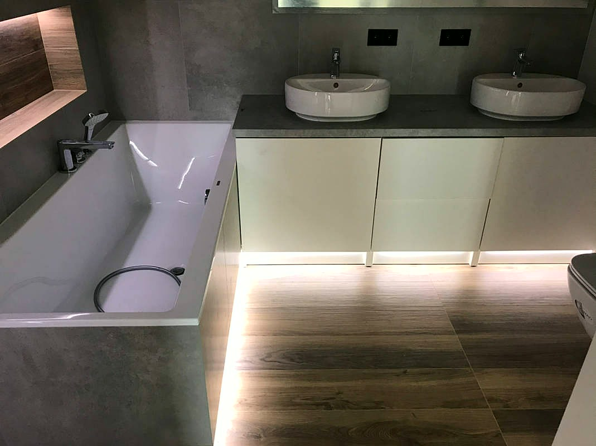

Jest rzetelny, cierpliwy i tłumaczy wszystko w zrozumiały sposób. Z czystym sumieniem polecam Bartosza każdemu, kto potrzebuje solidnego i godnego zaufania elektryka!
EEwelina Domagalska
opinia w Google
opinia w Google

Instalacje, oświetlenie, rozdzielnice, automatyka, alarmy i monitoring. Domy, mieszkania i firmy w Szczecinie i okolicy. Cenę znasz przed robotą, nie po.
Zdjęcia prosto z naszych zleceń: basen, schody, łazienka, klatka schodowa. Przewijaj dalej.




Jedna ekipa od tablicy po kamerę nad bramą. Przez telefon od razu powiemy, ile to mniej więcej kosztuje.
Zgasła połowa mieszkania albo bezpiecznik wybija po włączeniu czajnika? Szukamy przyczyny, nie podnosimy bezpiecznika „na próbę”.
Domy, mieszkania i obiekty firmowe. Od tablicy po ostatnie gniazdko, z pomiarami i protokołem na koniec.
Różnicówki i ochronniki przepięciowe do starszych tablic. Nowe rozdzielnice z opisanymi obwodami.
Taśmy LED, lampy, żyrandole i sterowanie światłem: ściemniacze, czujniki zmierzchu, schody na czas.
Grzejące się gniazdko to poluzowany zacisk. Wymieniamy osprzęt razem z połączeniem, nie samą obudowę.
Do odbioru domu, do ubezpieczyciela, do wynajmu. Mierzymy, wypisujemy i podpisujemy.
Sterowanie oświetleniem i ogrzewaniem, automatyka bram, szafy sterownicze w domach i obiektach.
Kamery CCTV, systemy alarmowe, sygnalizacja pożarowa (SAP) i instalacje antenowe Sat / RTV.

Rozdzielnica z jednego z naszych zleceń. Najedź na punkty, żeby zobaczyć, co jest czym.
Zdjęcie z realizacji Elektrodom.
Cztery kroki, zawsze w tej samej kolejności. Bez niespodzianek na rachunku.
Krótka rozmowa i wiesz, czy przyjedziemy i kiedy. Przy awarii od razu mówimy, co wyłączyć, żeby do naszego przyjazdu było bezpiecznie.
Zanim wyjmiemy narzędzia, wiesz, ile zapłacisz. Wyjdzie coś nowego w ścianie? Najpierw rozmawiamy, potem robimy.
Zaczętej roboty nie zostawiamy na „dokończymy w przyszłym tygodniu”. Zaczęte kończymy.
Na koniec mierzymy i pokazujemy wynik. Dostajesz protokół, gwarancję na wykonane prace i jasny rachunek.
Jest rzetelny, cierpliwy i tłumaczy wszystko w zrozumiały sposób. Z czystym sumieniem polecam Bartosza każdemu, kto potrzebuje solidnego i godnego zaufania elektryka!
Pan Bartosz bardzo pomógł nam w poprawie błędów w instalacji elektrycznej oraz przygotował potrzebne protokoły.
Jego praca była bez zarzutu, a cały proces przebiegł sprawnie i bezproblemowo.
Pan Bartek robił u mnie całą instalację, jestem bardzo zadowolony z usług. Bardzo profesjonalnie, aż pan z Enei podczas okresowego przeglądu był pod wrażeniem. Szczerze polecam
Rewelacyjnie szybki kontakt. Termin na za 1 godzinę. Gniazdka i dodatkowo kinkiet działa. Polecam. Rewelacja. Cena usługi przystępna.
Pan Bartosz wykonywał u nas podprogową instalację oświetleniową LED oraz system oświetlenia domu z zegarem słonecznym (programatorem). Podłączał również sprzęty AGD oraz montował gniazdka elektryczne. Gorąco polecam
Pan Bartosz szybko znalazł wolny termin, na czym mi zależało. Dobrze i bezpłatnie doradził mi w sprawie mojej instalacji elektrycznej i jej przyszłej rozbudowy. Sama zaś usługa została wykonana terminowo, szybko i w rozsądnej cenie.
Potrzebowałam elektryka z dnia na dzień do podłączenia skrzynki. Pan miał wolny termin, zrobił wszystko sprawnie, dobrze i w atrakcyjnej cenie. Polecam tego fachowca!
Pan Bartosz przyjechał terminowo, sprawdził instalację, skutecznie zdiagnozował i doradził. Sprawnie, sympatycznie, polecam!
Fragmenty prawdziwych opinii. Wszystkie przeczytasz na wizytówce Google i profilu Fixly.
Przeciągnij galerię. Kliknij zdjęcie, żeby je powiększyć.


Elektrodom Bartosz Sierakowski należy do Zachodniopomorskiego Związku Przedsiębiorców i Pracodawców. Kliknij certyfikat, żeby zobaczyć go w całości.
Baza jest w Szczecinie. Nie wiesz, czy dojedziemy? Zadzwoń i podaj adres. Jak nie dojeżdżamy, powiemy od razu i nie zajmiemy Ci dnia.
Nie ma tu Twojego pytania? Odpowiemy od ręki przez telefon.
Zależy, co się dzieje, dlatego wypytujemy przez telefon i od razu podajemy widełki. Ostateczną cenę ustalamy przy oględzinach, zanim zaczniemy.
Za obejrzenie i wycenę nie bierzemy pieniędzy. Płacisz za robotę, nie za rozmowę o niej.
Brak prądu w całym domu to pilny wyjazd i przestawiamy grafik. Dołożenie gniazdka spokojnie poczeka na umówiony termin.
Tak, na firmę albo na osobę prywatną. Dokument dostajesz od razu, razem z protokołem, jeśli robiliśmy pomiary.
Niekoniecznie. Najpierw pomiary, bo to one pokazują, co naprawdę jest groźne, a co jeszcze posłuży. Czasem wystarczy nowa tablica i osobny obwód do kuchni, a reszta może poczekać do remontu.
Wracamy i mierzymy jeszcze raz. Nasza wina, to poprawiamy za darmo. Wyszło coś nowego, to mówimy wprost, co i za ile.

Odbieramy całą dobę, 7 dni w tygodniu. Opowiedz, co się dzieje, a powiemy, kiedy możemy być i co wyłączyć do naszego przyjazdu.
Zadzwoń teraz